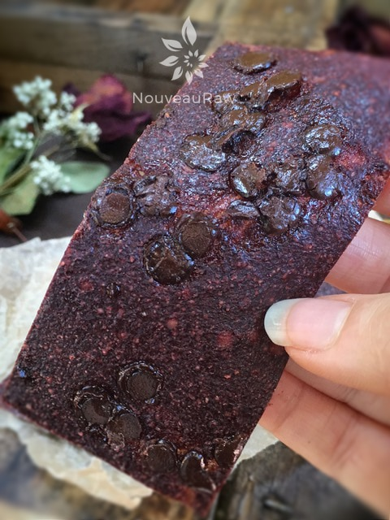

Chocolate Strawberry Fruit Leather
~ raw, vegan, gluten-free, nut-free ~
For those of you who love chocolate-covered strawberries, this is your lucky day. Chocolate covered strawberries have been transformed into a gourmet fruit leather, preserved in time. This flavor combination must be the most popular taste sensation of all.
Close your eyes and listen to my words… Rich and tantalizing, the decadent dark and heavenly chocolate disperses itself within the sinfully sweet, vine-ripened strawberries… Need I say more?
Keep in mind when adding raw cacao to this recipe that it is very bitter, so you will have to increase the sweetness of the puree because the strawberries won’t be sweet enough to stand up to raw cacao.
I have to tell you that when I had this in the dehydrator, it was causing my mouth to water all day long. The aroma that omitted from the pantry was warm and rich with chocolate. So go ahead and make a few batches.
What an extraordinary handcrafted gift to share with others but also with yourself. Composed of all-natural ingredients, you can satisfy your chocolate craving without the guilt.
Ingredients:
yields 3 1/4 cup puree = 18 gift packages
- 5 cups organic fresh strawberries
- 2 Tbsp chia seeds, ground
- 2 Tbsp raw cacao powder
- 2 Tbsp maple syrup
- 1 pinch Himalayan pink salt
- 1/2 cup chocolate chips or raw cacao nibs (to be added towards end)
Preparation:
- Select RIPE or slightly overripe strawberries that have reached a peak in color, texture, and flavor.
- Puree the strawberries, ground chia, raw cacao powder, maple syrup, and salt, in the blender or food processor until smooth. (don’t add the nibs).
- Taste and sweeten more if needed. Keep in mind that flavors will intensify as they dehydrate.
- When adding a sweetener do so a little at a time, and reblend, tasting until it is at the desired taste.
- It is best to use a liquid type sweetener. Don’t use a granulated sugar because it tends to change the texture.
- Allow the puree to sit for 10 minutes, so the chia has time to thicken the puree.

Spread the fruit puree on teflex sheets that come with your dehydrator. Pour the puree to create an even depth of 1/8 to 1/4 inch. If you don’t have teflex sheets for the trays, you can line your trays with plastic wrap or parchment paper. Do not use wax paper or aluminum foil. Sprinkle chocolate chips on top and gently press in.
- Lightly coat the food dehydrator plastic sheets or wrap with a cooking spray, I use coconut oil that comes in a spray.
- When spreading the puree on the liner, allow about an inch of space between the mixture and the outside edge. The fruit leather mixture will spread out as it dries, so it needs a little room to allow for this expansion.
- Be sure to spread the puree evenly on your drying tray. When spreading the puree mixture, try tilting and shaking the tray to help it distribute more evenly. Also, it is a good idea to rotate your trays throughout the drying period. This will help assure that the leathers dry evenly.
- Sprinkle the cacao nibs on top of the wet leather.
- Dehydrate the fruit leather at 145 degrees (F) for 1 hour, reduce temp to 115 degrees (F) and continue drying for about 16 (+/-) hours. Flip the leather over about halfway through, remove the teflex sheet, and continue drying on the mesh sheet. The finished consistency should be pliable and easy to roll.
- Check for dark spots on top of the fruit leather. If dark spots can be seen it is a sign that it is not completely dry.
- Press down on the fruit leather with a finger. If no indentation is visible or if it is no longer tacky to the touch, the fruit leather is dry and can be removed from the dehydrator.
- Peel the leather from the dehydrator trays or parchment paper. If it peels away easily and holds its shape after peeling, it is dry. If it is still sticking or loses its shape after peeling, it needs further drying.
- Under-dried fruit leather will not keep; it will mold. Over-dried fruit leather will become hard and crack, although it will still be edible and will keep for a long time
- Storage: To store the finished fruit leather…
- Allow the leather to cool before wrapping up to avoid moisture from forming, thus giving it a breeding ground for molds.
- Roll them up and wrap them tightly with plastic wrap. Click (here) to see photos on how I wrap them.
- Place in an air-tight container, and store in a dry, dark place. (Light will cause the fruit leather to discolor.)
- The fruit leather will keep at room temperature for one month, or in a freezer for up to one year.
Culinary Explanations:
- Why do I start the dehydrator at 145 degrees (F)? Click (here) to learn the reason behind this.
- When working with fresh ingredients, it is important to taste test as you build a recipe. Learn why (here).
- Don’t own a dehydrator? Learn how to use your oven (here). I do however truly believe that it is a worthwhile investment. Click (here) to learn what I use.
© AmieSue.com